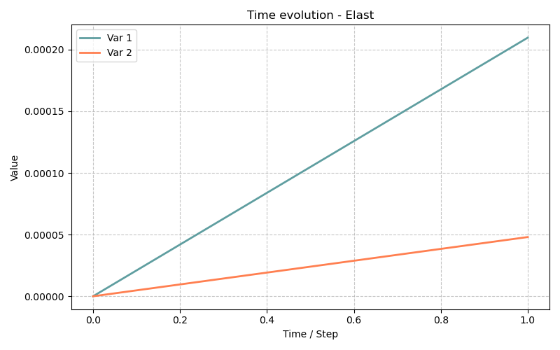

Modèle Elast0 — Élasticité Linéaire Isotope (Géométrie Axisymétrique)
Fichiers sources :
src/Models/ModelFiles/Elast.c·test_examples/Elast/Elast0
Table des matières
- Contexte et objectif
- Hypothèses
- Variables et Modèle mathématique
- Explication des fichiers d'entrée
- Résultats escomptés
1. Contexte et objectif
Le modèle Elast permet de résoudre de bout en bout le problème d'élasticité linaire. Il s'agit d'un des cas les plus basiques de la mécanique des milieux continus modélisant, pour de petites déformations, un solide se déformant de manière complètement réversible et instantanée face à des forces, pressions ou blocages géométriques.
L'exemple test_examples/Elast/Elast0 illustre le comportement d'un solide massif cylindrique multicouche. Pour gagner en temps de calcul, on n'utilise pas un maillage 3D complexe, mais on exploite les symétries en déclarant le maillage selon un comportement bidimensionnel en révolution (système de coordonnées axisymétrique repéré usuellement en \(r, z\)). L'objectif du scénario est de simuler l'équilibre d'une structure en stratification souple et rigide, chargée en pression interne (tube sous pression).
2. Hypothèses
- Relation contrainte-déformation linaire (Loi de Hooke isotrope) : Chaque strate est caractérisée avec exactitude par un seul couple de paramètres élastiques : Module de Young (\(E\)) et coefficient de Poisson (\(\nu\)).
- Petites perturbations : L'équation s'écrit sur la géométrie originelle sans prendre en compte les distorsions géométriques massives \(\boldsymbol{\varepsilon} = \frac{1}{2}(\nabla \mathbf{u} + \nabla^T \mathbf{u})\).
- Chargement quasi-statique : L'expérience ignore les forces d'inertie.
- Matériau composite macroscopique : Les éléments de maillage se partagent sous diverses "layers" (couches) définies par des lois aux valeurs distinctes.
3. Variables et Modèle mathématique
L'implémentation (visible dans src/Models/ModelFiles/Elast.c) décrit un système d'équation simple dont le nombre est dicté par la dimension de l'espace. En mode 2 axis (radial et longitudinal), il y a deux équations de conservation de quantité de mouvement appelées meca_1 (\(u_r\)) et meca_2 (\(u_z\)).
Inconnues
| Symbole | Signification |
|---|---|
| \(\mathbf{u}\) | Déplacements nodaux (inconnue primaire de l'équilibre) |
Équilibre Statique
Sans présence de processus thermiques ou aqueux couplés, la condition se base sur : $$ \nabla \cdot \boldsymbol{\sigma} + \rho_s \mathbf{g} = \mathbf{0} $$
Loi de comportement
Dans Elast.c, chaque intégration prend en compte le tenseur isochore et volumique construit tel que :
$$ \boldsymbol{\sigma} = \boldsymbol{\sigma}_0 + \mathbb{C} : \boldsymbol{\varepsilon} $$
Ici, \(\boldsymbol{\sigma}_0\) se substitue au tenseur optionnel des précontraintes de la structure. \(\mathbb{C}\) est le tenseur de raideur d'ordre 4.
4. Explication des fichiers d'entrée (Elast0)
Le fichier principal est une excellente vitrine de paramétrage de conditions composées dans Bil. Il gère plusieurs régions et applique une charge dynamique par morceau.
-
Geometry & Mesh
Concrétise la consigne d'aborder des coordonnées matérielles \(r, z\), ce qui modifie à la volée le calcul des intégrations de volume de l'élément fini en injectant le Jacobien de la révolution \(2\pi r\). -
Definition des matériaux (Layers) Où il y a ici juxtaposition de couches au repos comprimées:
Trois domaines physiques sont posés. Tous initient avec une pression résiduelle négative (compression de -1 MPa radiale, ortho et axiale), mais diffèrent par la consigne de raideur, imitant par exemple un tube fretté. -
Field et Function (Chargement instationnaire)
- Le Champ n°1 modélise une base de 1 MPa.
-
La fonction dicte l'historique du chargement : Au temps 0 on démarre à \(100\%\) du champ, au temps 1 on monte en pic à \(10 \times\) l'effort nominal (10 MPa), et au temps 2 on chute à un simple \(10\%\).
-
Conditions aux Limites (Déplacements & Efforts)
Une section de la pièce repérée en 80 a son mouvement longitudinal empêché et mis à nul (u_2 = 0). Elle est encastrée.
Loads
7
Region = 10 Equation = meca_1 Type = pressure Field = 1 Function = 1
Region = 20 Equation = meca_1 Type = pressure Field = 1 Function = 1
Region = 30 Equation = meca_1 Type = pressure Field = 1 Function = 1
...
pressure subissant la fluctuation cyclique Function 1 (de 1 à 10 puis 0.1 MPa) le long des faces du tube (possiblement l'intérieur radial de différentes sections).
- Solveur temporel et Procédure Linéaire
Dates : 0 1 2demande l'écriture des bilans stricts aux bornes de la fonction.Iterative Process : Iterations = 1. Ceci est crucial, avec des modèles mécaniques non-évolutifs (ni dégradation, ni plasticité non-linéaire, petites déformations), il n'y a pas besoin de solutionner par méthode de Newton. L'inversion directe de matrice \(\mathbf{K} \cdot \mathbf{u} = \mathbf{F}\) est exacte à l'issue de la première passe, la tolérance joue une marge de vérification.
5. Résultats escomptés
Cette modélisation retranscrit classiquement l'évolution contrainte/déformation pour des pièces composites ou maillées :
- La forme multicouche crée des sauts brusques d’état de contraintes entre les strates molles (Layer 2) et rigides (Layer 1 et 3).
- En revanche, les vecteurs déplacement resteront garantis continus le long du raccord en interfaçage, les éléments finis nouant ces limites d'intégrités géométriques ensemble.
- Au bout de chaque calcul au temps ciblé, par exemple à \(t=1\) l'effet d'expansion tubulaire due à la pression très haute est maximal, la paroi s'évase suivant les axes radiaux \(u_1\). Au temps \(t=2\), l'édifice se rétracte et, selon la topologie, peut même se replier sous l'effet des précontraintes imposées (sig0_ij = -1 MPa), le tout en stricte absence d'adoucissement irréversible du matériau.

6. Références bibliographiques
- Dangla, P. — Bil : a FEM/FVM platform for multiphysics simulations.
- O.C. Zienkiewicz, R.L. Taylor, J.Z. Zhu — The Finite Element Method: Its Basis and Fundamentals. (Pour la modélisation mathématique générale par éléments finis élastiques et l'intégration jacobienne axisymétrique).
- Hooke, R. — Loi de Hooke généralisée décrivant la réponse pseudo-linéaire du tenseur d'élasticité isotrope (\(\mathbb{C}\)).